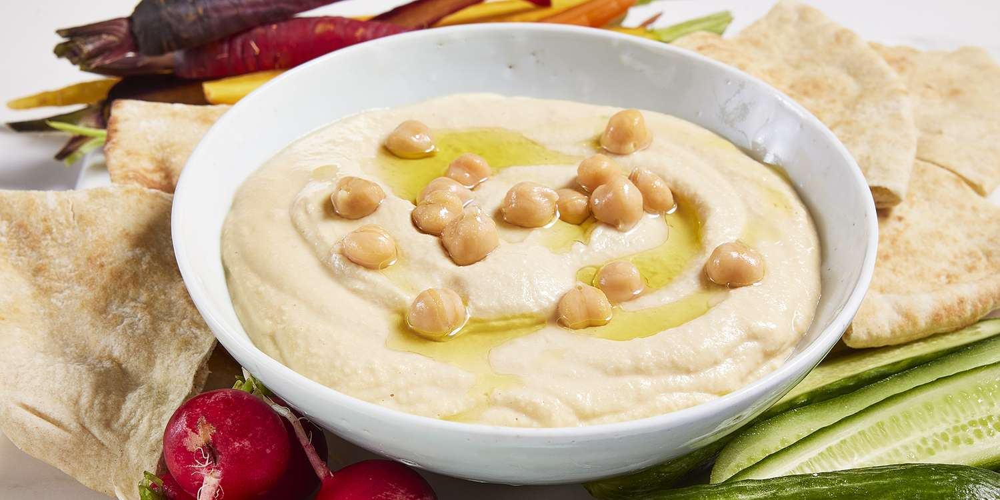

Ultra Smooth Hummus
Description
Say goodbye to that store bought hummus. With this simple recipe you will
have the smoothest and tastiest hummus in a few minutes.

Ingredients
- 2 cloves garlic
- 1 (19 oz) can chickpeas (garbanzo beans), reserve half the liquid
- 4 tbsps lemon juice
- 2 tbsps tahini
- 1 tsp salt
- 2 tbsps olive oil
- black pepper to taste
Steps
- Chop the garlic and add to a blender.
- Drain chickpeas (reserve half the liquid) and add them to a bowl.
- Fill the bowl with water. Rub the chickepas around by hand to loosen their skins.
The skins will float to the top where you can easily collect them and discard.
- Drain the water from the chickpeas and add them to the blender with the garlic. Keep 1 tbsp as a garnish.
Add reserved liquid, lemon juice, tahini, and salt to the blender. Blend until creamy and well mixed.
- Transfer mixture to a medium bowl. Top with a drizzle of olive oil, reserved chickpeas, and pepper to taste.
Credits: ROYHOBBS, allrecipes.com